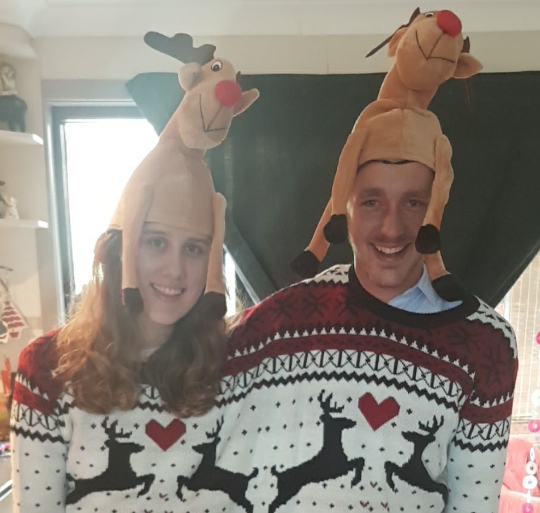

Matthew's IT Profile 
Matthew is a supervisor in the road infrastructure industry, his job has given him many opportunities to travel and develop connections across Australia. Matthew loves 4-wheel-driving to remote beaches with his partner and two dogs. His interest in IT stems from his passion for solving problems and increasing efficiency using the latest development in technology. Matthew’s fields of interest within IT are cyber security and robotics, however he is open to all branches of the industry.
Personality Test Results
Angadh's IT Profile 
From rural NSW, Angadh grew up on a farm and works part-time in his family’s business. Angadh’s passions include sports, video games and trying and testing new foods. He loves all animals and keeps pets to care for including two dogs and a parrot. Angadh’s IT experience is predominantly as a consumer, loving video games and their collaborative nature, he has also dabbled in HTML coding through his school years and is now looking to expand upon and broaden his IT knowledge. His interests in the IT sphere include the broad spectrum of knowledge, but specifically is looking towards the management of systems inside the STEM field.
Personality Test Results
Maddison's IT Profile 
Maddison is a Wellbeing Co-Ordinator in an aged care facility in NSW. Her leadership ability led her to be part of a team enforcing the Consumer Directed Care Model throughout her work. Maddison’s hobbies include travel to remote regions to camp and bushwalk, as well as spending time in mindful pursuits such as reading, completing puzzles and watching documentaries. Maddison’s background in IT stems from within her work as an aged care provider. Taking charge of her
workplace’s communications platform and streamlining the system to increase efficiency. Maddison’s fields of interest within IT are heavily towards tech, gadgets, and robotics. Madison’s love of sci-fi has influenced her desire to understand and create the future of technology.
Personality Test Results
Beau's IT Profile 
Beau works construction within the post-tensioning industry, a hard worker with an eye on project management and training in Outdoor Recreation. Beau is an avid basketballer, competing at high levels through his junior years and up until he started his young family in NSW. Beau’s hobbies include spending time with his family and playing PC games in his spare time. Beau’s background in IT comes as being a consumer of video games in his youth and a love of tinkering with the internal working of PCs, this leading to an exploration of various software and coding languages. Beau is heavily interested in software design and its implementation across the life of various projects.
Personality Test Results
Cameron's IT Profile
Cameron is studying alongside his full-time work as an electrician. Cameron is an animal lover and cares for his veritable zoo with love. Cameron enjoys board and video games, camping, motorbike riding and bushwalking with his dogs. Cameron’s IT experience has been from a lifelong passion for tech. After developing a video game portfolio at school, Cameron enrolled into the AIE. Now he is looking to expand on his passion with formal training in IT. His areas of interest include software engineering and software architecture, using remote work to develop products for clients.
Personality Test Results
Kieran's IT Profile
Kieran is an Electrician by trade undergoing study in the Bachelor of Information Technology to expand the scope of his work beyond construction, install and maintenance. When not working or studying, Kieran is an avid sportsman playing both field hockey and cricket, and loves getting away to the south coast for a day in the surf. Kieran’s IT interests are broad spanning from video games to network engineering, of particular emphasis however is the ever-expanding Internet of Things and Building Management Systems. Kieran’s technical IT experience is through his work as an electrician, installing and maintaining small networks and their backbone equipment, his experience of the rest of the IT sphere is as a consumer of software and gadgets.
Personality Test Results